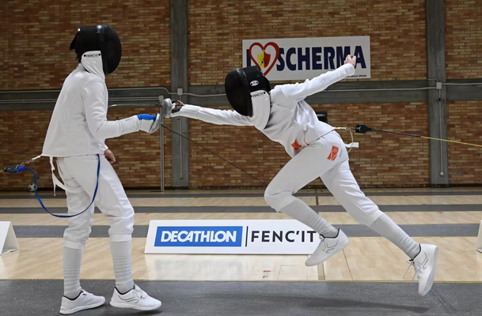
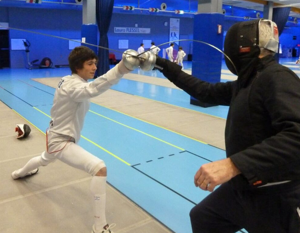
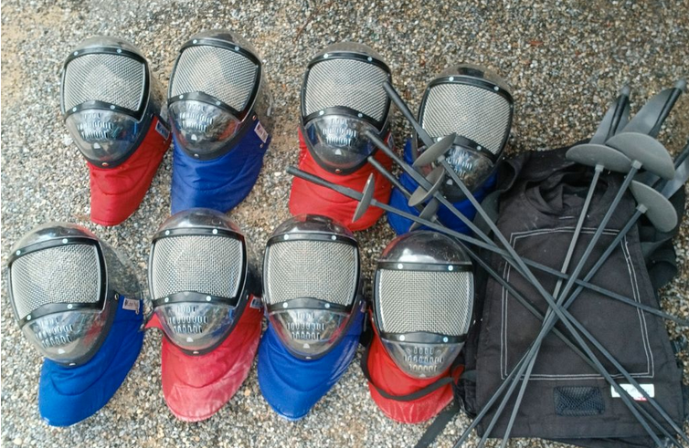

LE RÈGLEMENT
Le but est de toucher son adversaire avec son arme sur une zone cible spécifique, tout en évitant d'être touché soi-même.

1. La zone valable
Selon l'arme utilisée (fleuret, épée, sabre), seule une partie spécifique du corps de l'adversaire compte comme zone de touche valide pour marquer un point.
2. La priorité
Au fleuret et au sabre, il faut avoir l'initiative de l'attaque (la priorité) pour marquer. À l'épée, si les deux touchent en même temps, les deux marquent un point.


3. Le matériel
Les tireurs doivent porter un équipement de protection complet et homologué (masque, veste, pantalon, gants...) pour une sécurité maximale.
Variantes
Il existe aussi l'escrime artistique (spectacle), l'escrime handisport (en fauteuil roulant) ou les arts martiaux historiques européens (AMHE).